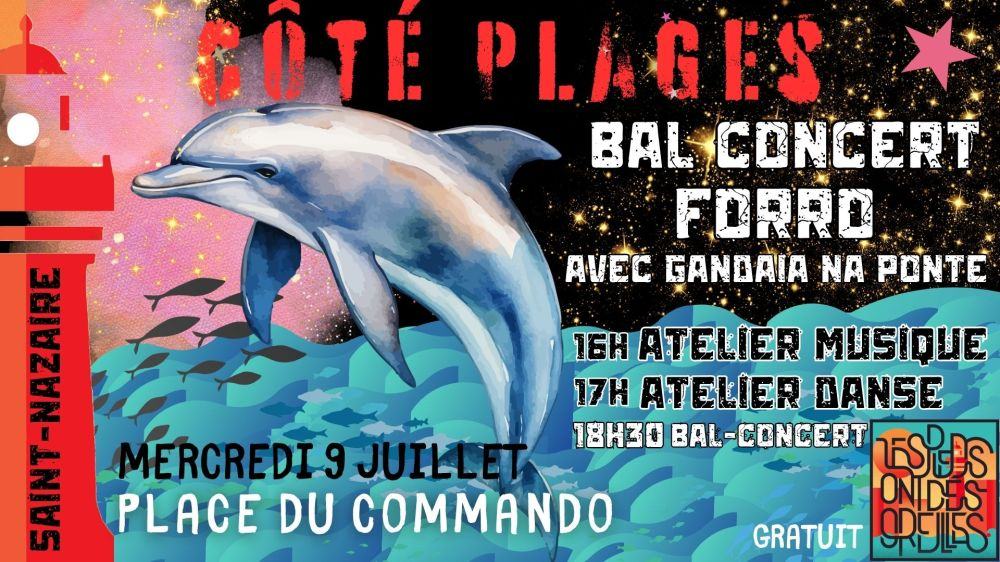

Bal-concert forró, ateliers danse et musique à Saint-Nazaire

🌴 Forró commando à Saint-Nazaire – Mercredi 9 juillet 🌊
Les Pieds Ont Des Oreilles et Côté Plage vous invitent à une soirée ensoleillée face à l’océan !
Au programme :
🪗 16h: Atelier de musique forró
💃 17h Atelier de danse forró (débutant)
🎶 18h30: Bal-concert avec @Gandaia Na Ponte
Venez découvrir ou redécouvrir le forró, cette musique irrésistible venue du Nordeste du Brésil, et danser ensemble sur la place du Commando à Saint-Nazaire !
📍 Place du Commando – Saint-Nazaire
💛 Gratuit et ouvert à toustes !